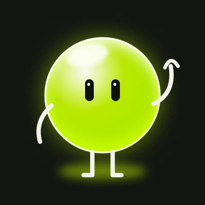
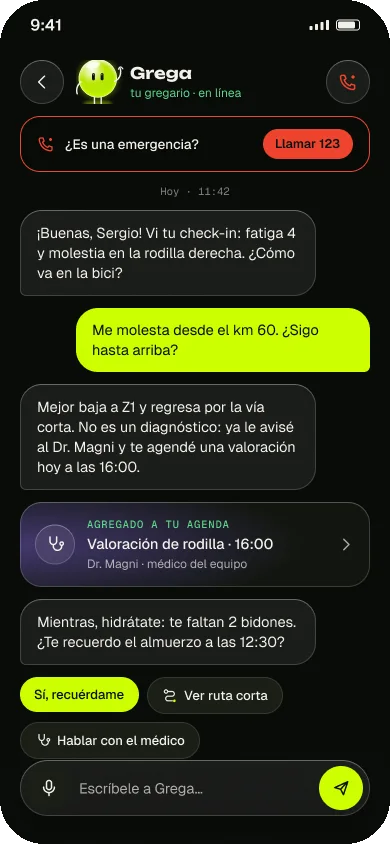

Manual de marca
Pelotón
encadenado.
Una marca hecha con tres círculos: dos aros entrelazados como eslabones de cadena y una bola volt adelante. El equipo va a rueda del ciclista, y el ciclista siempre va primero.
Cada animación tiene un trabajo en la app. Inicio: los aros entran uno a uno y la bola rebota (splash). Sincronizando: una ola volt recorre los aros mientras se cargan datos de Garmin o Strava. Sincronizado: sale una onda de la bola cuando todo quedó guardado. H
Qué significa
Cuatro lecturas
en un símbolo.
- El atleta
La bola sólida volt va adelante. El ciclista es el centro y el usuario principal; por eso la bola siempre es volt y siempre va adelante.
- A rueda
Tres círculos en fila son el pelotón: el equipo avanza unido detrás del ciclista, protegiéndolo del viento.
- Cadena
Los aros entrelazados son eslabones: preparador, nutricionista, médico y director conectados. Eso es el "Sync".
- Ciclo
Un aro no tiene principio ni fin: entrenar, registrar y recuperar, todos los días.
Geometría · viewBox 4 24 136 72
- Aro 1 · centro (40,60) · r 26 · trazo 9 · #4F534E
- Aro 2 · centro (72,60) · r 26 · trazo 9 · #A9ADA6
- Cruce · el aro 1 pasa por encima en el cruce superior
- Bola · centro (104,60) · r 28 · #CCFF00 · corte de 6 px del color del fondo
Lema: "Tu equipo, a rueda contigo" pendiente de aprobar
Sistema del ícono
Del jersey a la notificación
Tres tonos con entrelazado
Jersey, sello o grabado
Un aro y la bola, 48 px o menos
Notificaciones y estado "en vivo"
Cómo llegamos aquí
Nueve rondas de logo
R1
Bici geométricaGustó la tipografía gruesa; el símbolo se sintió genérico.
R2
Pulso y corazón rodanteEl corazón con ruedas se leía mal.
R3–R4
"oto" y cascoSe perdía la bici.
R5
EslabónForma simple con significado.
R6
RebufoLas bolas en fila gustaron mucho.
R7–R8
Eslabón + bolasBolas perdidas o símbolo muy largo.
R9 · aprobado
Pelotón encadenadoEslabón + rebufo + atleta adelante.
Mascota y agente IA
Grega,
tu gregario.
En el ciclismo, el gregario trabaja para su líder: le lleva el agua, lo protege del viento y lo acompaña. Grega nace de la bola volt del logo convertida en compañero. Es una esfera de vidrio líquido con ojos en píldora y brazos de línea.

Toca un estado
Regla de emergencia: en Alerta, Grega deja de jugar. Primero aparecen "Llamar 123" (emergencias en Colombia) y el aviso al médico del equipo. Grega no diagnostica.
Caricaturesco a propósito
Los rasgos humanos en apariencia y lenguaje aumentan la presencia social y la confianza en agentes de salud. Un agente hiperrealista puede caer en el "valle inquietante". F1
Vidrio, no peluche
Se probó una textura de peluche contra el vidrio líquido. El vidrio ganó porque pertenece al mismo sistema visual que la barra de pilares y los botones.
Habla como compañero
Voz directa y breve. Recuerda, agenda y explica, pero las decisiones clínicas siempre las toma el médico del equipo. H
Color
Asfalto, volt
y crema.
Tres colores de núcleo; los grises salen de opacidades del texto. Toca un color para copiar su código.
Asfalto
Fondo oscuro, logo e ícono. Es la carretera y la noche de recuperación.
Volt
El atleta, "Sync", la acción principal y Grega. Se ve de lejos, como un chaleco reflectivo.
Crema
Texto sobre oscuro y fondo claro. Más cálido y menos agresivo que el blanco puro.
Volt profundo
El volt no se lee sobre claro; esta versión cumple contraste 5.3:1 para texto e íconos.
Un aura por pilar
Un degradado desenfocado por pantalla dice en qué pilar estás. Los rosados y magentas de los referentes se descartaron.
#3FC8E4
Ruta
#CCFF00
Registro
#FF6A2B
Rendimiento
#8E6BFF
Agenda e IA
Zonas de intensidad
Se usa la convención de color de Garmin, la misma que el ciclista ya ve en su reloj, para que no tenga que aprender otra. P2
Tipografía y voz
Ligera y negrita
en el mismo título.
Las pruebas simuladas señalaron que las cifras en Doto cuestan con brillo bajo en la calle (Usuario 7). Se mantiene solo para la cifra principal de cada pantalla y nunca para texto. H
Temas y vidrio
Noche para recuperar,
día para rodar.
Oscuro · Recuperación para la noche y el descanso. Claro · Ruta para el día en la calle, porque la polaridad clara se lee mejor con luz brillante. F3 El tema cambia solo con la luz del ambiente y también se puede cambiar a mano.
El vidrio se reserva para la barra de pilares, los botones flotantes y la barra de estado. El texto largo va siempre sobre superficie sólida. Si el usuario activa "Reducir transparencia", todo vidrio pasa a sólido y el texto mantiene 4.5:1. F4


Ilustración e íconos
Figuras con luz propia.
Ciclistas, staff y objetos con grano, degradado y un halo del color de su pilar. Además hay 41 íconos propios, los "Eslabón", en rejilla de 24 con trazo de 1.75. Su firma es un punto relleno, que es la bola del logo.
Mockups
La app
en el bolsillo.
Pantallas del prototipo de alta fidelidad: ciclista, equipo técnico y médico. Desliza hacia el lado.
Fuentes de esta página
- Li, X., Luximon, Y., & Zhang, J. (2023). Rasgos antropomórficos y confianza en agentes conversacionales de salud. Journal of Medical Internet Research, 25, e44479. doi:10.2196/44479
- Garmin. Heart Rate Color Zones (manual de Forerunner 225). support.garmin.com
- Nielsen Norman Group. Dark Mode vs. Light Mode: Which Is Better? nngroup.com
- Nielsen Norman Group. Glassmorphism. nngroup.com · Axess Lab. Glassmorphism Meets Accessibility. axesslab.com · W3C. WCAG 2.2, criterio 1.4.3 Contraste mínimo. w3.org
- Tipografías: Unbounded y Doto (SIL Open Font License) en Google Fonts; Geist y Geist Mono de Vercel (OFL).
- Logo, Grega, colores, ilustraciones y pantallas: bitácora de identidad visual del proyecto (rondas 1–9, aprobado el 13 nov 2026). B